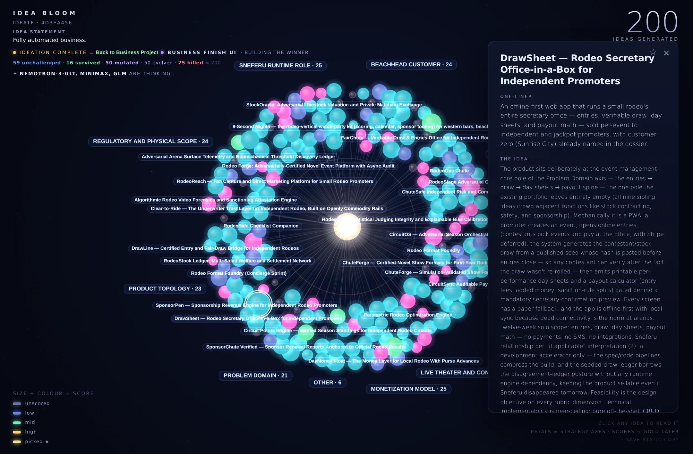
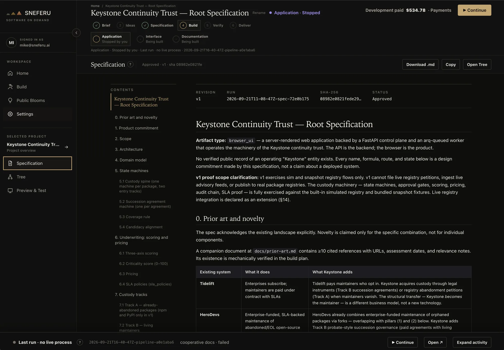

Independent minds.
Models from different training lineages get different jobs: author, adversary, reviewer, scorer, judge. Disagreement is part of the process, not a bug to smooth over.
Get your best version
One model should never be the sole judge of its own output. A persuasive response is not evidence. Agreement from the same underlying intelligence is not independent review.
A dispatch system for a 40-truck HVAC fleet: parts inventory, route planning, and it has to work offline on a tablet.
With the receipts: three drafts, every objection, the tests, the cost, and the version you tried.
Most AI systems let the same intelligence write the answer, review it, and announce it’s done. Sneferu was built on the opposite rule, and everything else follows from it.
Models from different training lineages get different jobs: author, adversary, reviewer, scorer, judge. Disagreement is part of the process, not a bug to smooth over.
Tests, validators, real data, and runtime checks can overrule every model in the room. A persuasive answer is not a finished one.
Every run leaves its decisions, objections, tests, costs, and failures on the record. You inspect how the work earned completion, not just the last answer.
Research is not a coding task. A business is not a chat. Each kind of work gets its own production line, with the same engine and the same evidence underneath.
The specification is argued to convergence first. Then an implementer, a pair coder, and an independent reviewer work inside the real project, with tests and validators feeding every failure back until the evidence passes.
 Actual build screen · Software On Demand · Select image to enlarge
Actual build screen · Software On Demand · Select image to enlarge
Start with a field you know. An Idea Bloom grows and scores hundreds of directions; the weak are cut. The one you pick becomes a specification, a build, and a launch. Every stage is a real run, with a written audit of its own performance.

Recorded Idea Bloom · 200 ideas · DrawSheet selected · Select image to enlargeA question meets real data. Instruments measure, the system tries to refute, and findings, disagreements, and unresolved claims stay together for review. It rediscovered the Z boson at 201σ from public data, and refused a 5.29σ false positive its own statistics couldn’t defend.
 Research Mission Control · Select to open a published expedition
Research Mission Control · Select to open a published expedition
Concept, design, art, assets, code, and machine playtest across seventeen phases, under a hard budget. Whether it compiles, whether it works, and whether it’s fun stay separate questions. HungerHall went in as one sentence and came out playable, with a published bug ledger.
Describe what you need. Rival models argue the specification until one survives and you approve every word. Sneferu Coders build it. Before you see it, it’s tested, installed clean, and started. You try the real thing, ask for fixes, accept the version you tried, and pay for the work done.

Actual SOD workspace · an agreed specification ↗Around 2600 BC the pharaoh Sneferu set out to build something nobody had built: a true, smooth-sided pyramid. It took him three tries.
Sneferu kept building until he got it right. That's the company.
Sneferu builds tools for its own next round of work: memory that carries context forward, and a workshop for making models better.
Sneferu’s long-term memory. Typed entries, conflict checks, and a history of what changed, so the next run starts with more than a blank slate.
A workshop for improving AI models. FDC finds recurring failures, assembles focused training examples, and tests each candidate before replacing the last good version.
Recorded demonstration · simulated model responses.
Neither. Sneferu is the system around the models: planning, execution, tools, memory, review, and recovery. Software is one kind of work it finishes. Businesses, research, and games run on their own production lines on the same system.
Different model families have different blind spots. Sneferu gives them different responsibilities and lets independently trained lineages challenge the work. Agreement alone proves nothing. Tests, validators, real data, and runtime evidence can overrule every model in the room.
The outcome met the checks for that kind of work. A software build needs execution evidence; a research claim needs support the system tried to refute. A completed run is not automatically a qualified product, and Sneferu says so. Remaining problems stay on the record instead of disappearing.
Snef is the Sneferu Brain: the operator you talk to. It reads the state of the system, uses memory and tools, and turns a goal into a plan and the right kind of run, with permissions and launch controls intact.
Inside Sneferu walks through every named part in plain language. The System Atlas maps the architecture, relationships, and implementation.
Software On Demand is live for application builds. For the wider system, research collaboration, or a partnership, talk to the founder about what you want to finish.